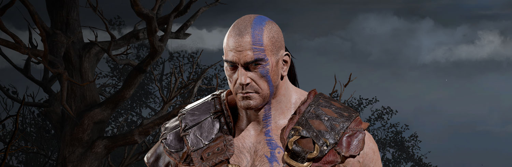
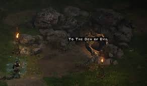
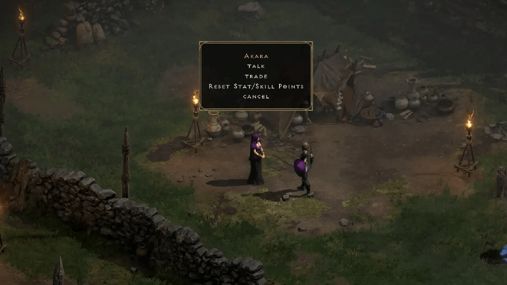
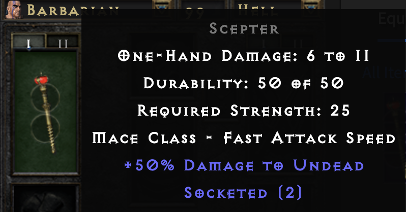
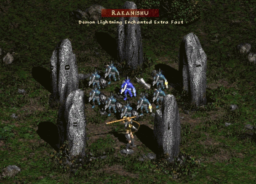
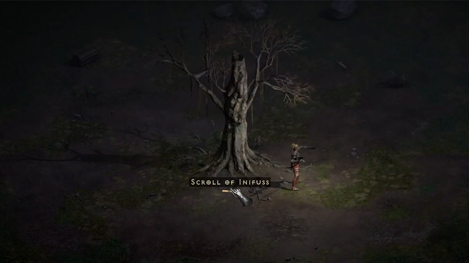

The Other Other Budget Sorc
Subtitle Goes Here
It may not look it but the barbarian can be played similar to a sorc in hell mode.
Budget singer barb

Make your way into outside of town into "Blood Moor"

Follow the road ocasionally it will split with one path leading to the cold plains while the other leads to the den of evil its never far off so if the path you're following did not lead to the den of evil after a few seconds double back to the other path! Don't go inside yet use a town portal (you'll have one inside your inventory upon creating your character)

Next follow the other path to cold plains and use the waypoint to return to town

Next take the portal you made previously and clear the den of evil

now kill all of the monsters in the den of evil, keep any rings,ammy's, charms, scepters, wands, staffs, you're trying to find high value items to sell when you return to town.
you can check your quest log by hitting "q" when you are close to completing the den you will be top on the upper left hand how many monsters you have remaining in order to complete the quest, alternatively you're character will speak and you will see streaks of light when the den is cleared.


After you have cleared the den of evil return to town and talk to Akara to complete the quest and receive your reward.

Sell whatever you can to Akara buy a tomb of town portal if you can afford it otherwise buy a scroll of town portal, buy a few staminia and health potions if you have none but most importantly look for cheap 2os scepter's (they will not have any + skills or abilities)

You'll want dual weild two of these when able.Even if you find nothing else these can carry you through act 1 and 2 if needed, as you find chipped gems add them into the sockets (ruby,emerald,topaz,sapphire)
Now return to the cold plains and make your way to stony field killing monsters along the way
As you level up you'll first want to point 1 point into bash, followed by mace mastery
Be mindful of the following runes & enemies, "Rakanishu" will release charge bolts when you hit him

If he is too strong skip him and make your way to the underground passage, i'll gain several levels in the process and make quick work on him later.

Once in the passage explore until you find the dark wood exit, if you see the underground passage level 2 skip it
Once in dark wood look for the tree of inifuss and the waypoint, if the mobs around the tree are too strong make them follow you and quickly run back to the tree to get the scroll.

Here’s an example of a list:
- First item
- Second item
- Third item
And here’s an example of a code block:
console.log('Hello, world!');
Example Table
| Header 1 | Header 2 | Header 3 |
|---|---|---|
| Row 1, Cell 1 | Row 1, Cell 2 | Row 1, Cell 3 |
| Row 2, Cell 1 | Row 2, Cell 2 | Row 2, Cell 3 |